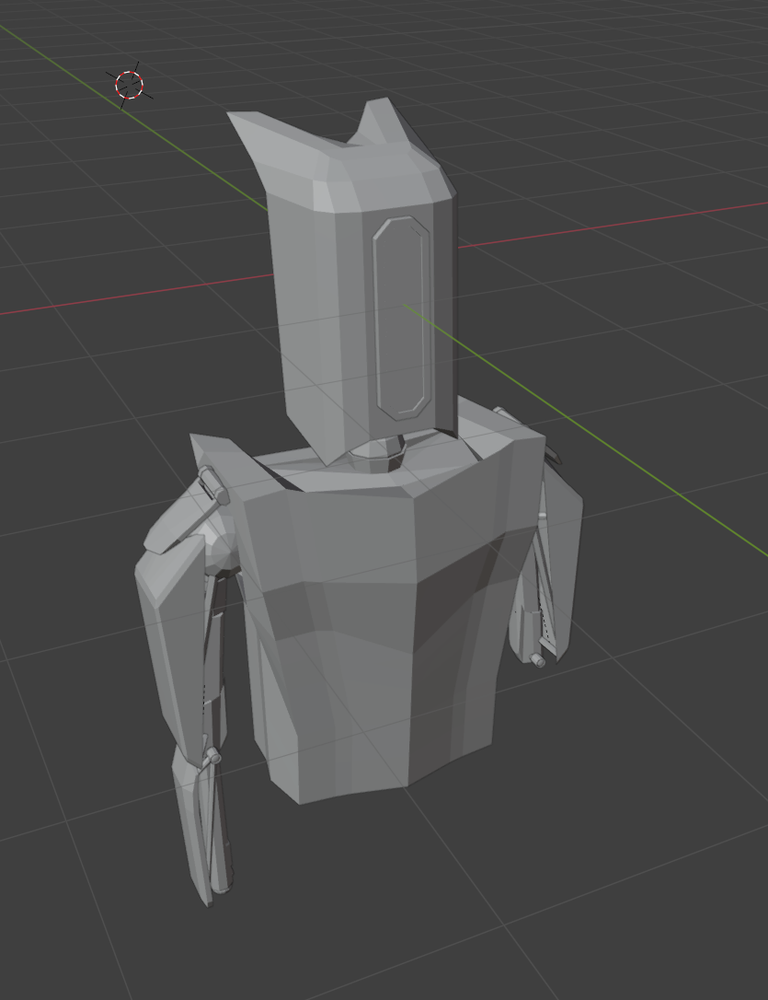
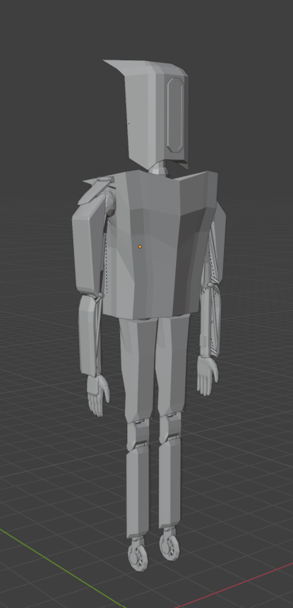
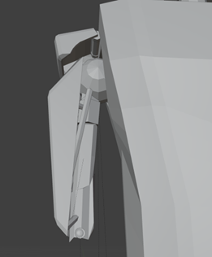
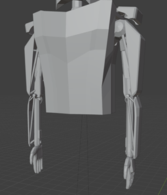
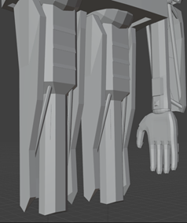
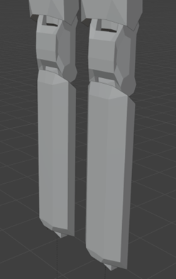
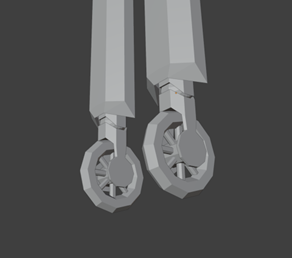
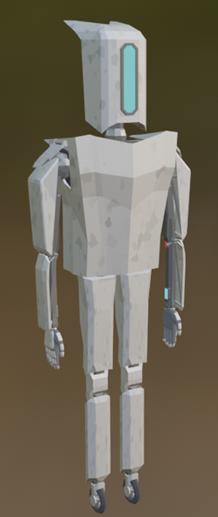
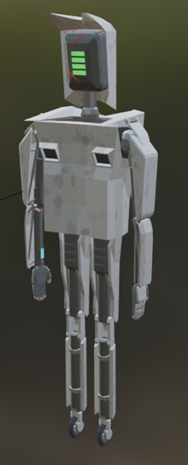

Initial Concept
Rough shape inspired by fast-action protagonists.
Refined Concept
Click to see more.
Front of model

Back of model
Add detail to features including wires and plating.
More Detail
Click to see more.
Upper arm of character.

Torso and completed arms.
Upper legs and hand.
Lower legs of character.
Wheel feet.
Colour
Click to see more.
Colored model with details.

Colored model with details from the back.